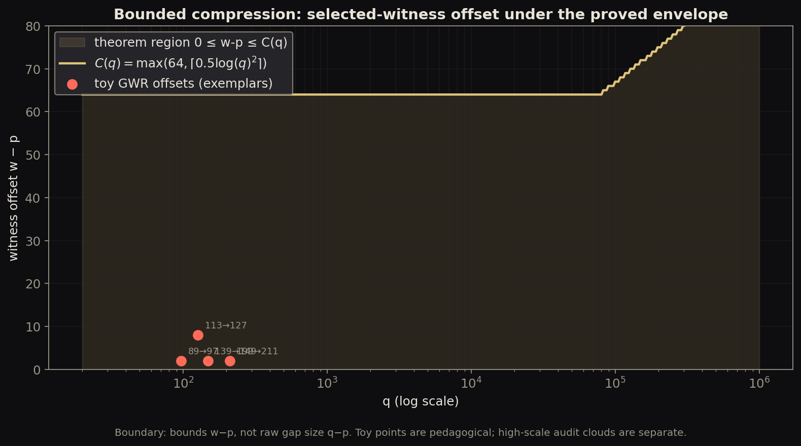

mixed
Witness offset under proved C(q) envelope
Curve: universal bounded compression theorem for w-p (PROOF.md). Points: toy exemplar offsets only. Not a high-scale measured cloud and not a claim about raw gap size q-p.

- Regime
- theorem curve for all q; toy points from fixtures/exemplars/gaps.json
- Claim language
- weak
- Reproduce
visualizations/library/.venv/bin/python visualizations/library/entries/witness-offset-envelope/demo.py- Chapter refs
PROOF.mdresearch/04-bounded-compression/docs/RESULTS.md
- Tags
Observable object
For a gap (p, q) the selected witness sits at some distance w - p from the left prime. The plot shows that offset against a hard upper envelope.
Mechanism
Universal bounded compression (proved) states
w - p ≤ C(q) = max(64, ceil(0.5 * log(q)^2))
for every consecutive prime gap with nonempty interior. The shaded region is that theorem. Red points are only tiny teaching examples, not the audit surface.
Project terms
- Selected-witness offset:
w - p. - Dynamic cutoff / C(q): Cramér-scale envelope on the witness, not a claim that raw gaps
q - pobey the same bound as a theorem here.
Status and limits
- Curve status: theorem (
PROOF.md, 2026-07-05). - Points status: toy illustration.
- Does not prove RH, PNT, or classical Cramér for raw gap size.
- High-scale utilization audits belong in separate measured/audit entries.